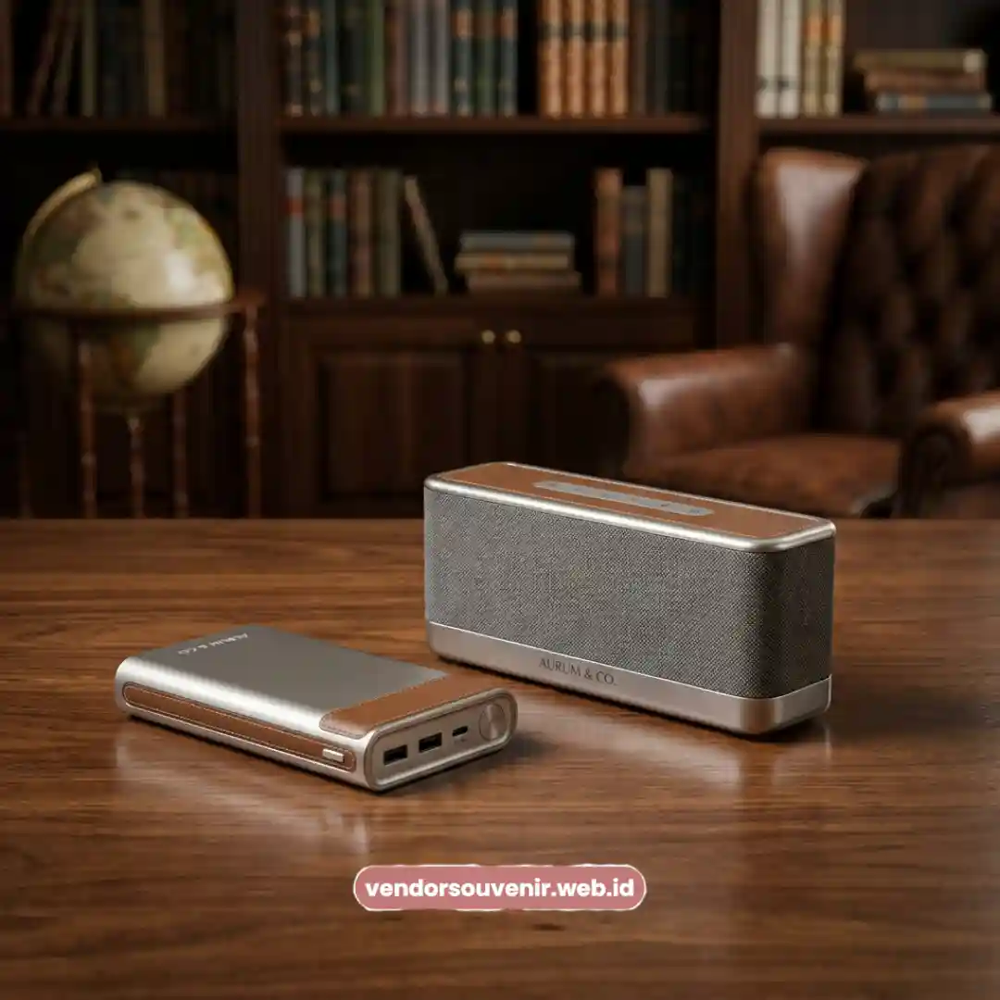
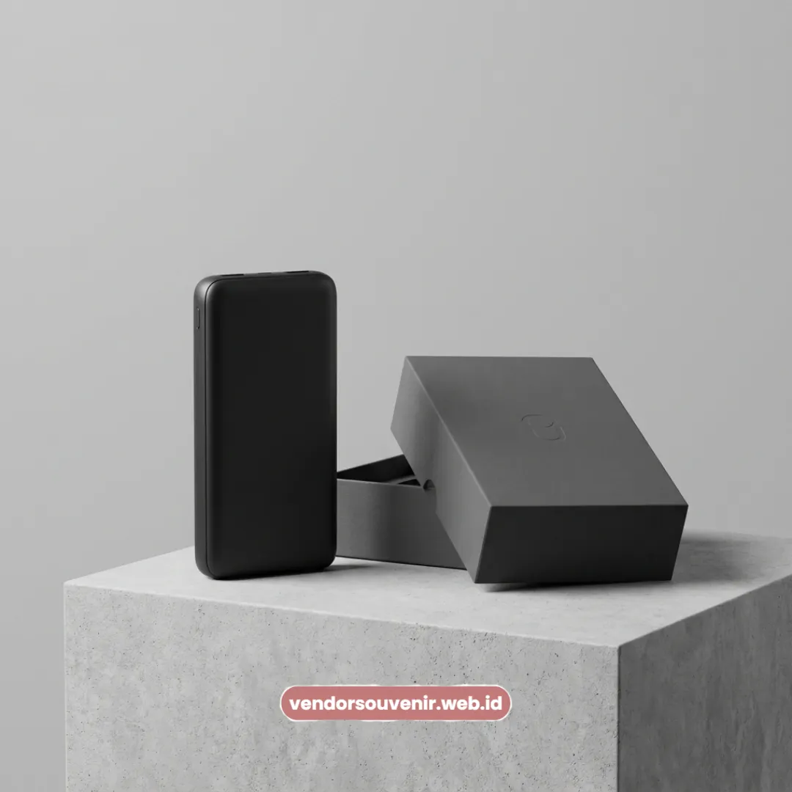

Daftar Isi
Seminarkit ID menyediakan souvenir teknologi custom logo untuk perusahaan di Yogyakarta, termasuk kawasan Sleman dan sekitar kampus UGM.
Powerbank dan speaker bluetooth custom logo menjadi pilihan utama souvenir teknologi di Yogyakarta.
Perusahaan di kawasan Sleman dapat memesan souvenir teknologi untuk kebutuhan acara korporat maupun akademik.
Kawasan sekitar kampus UGM sering menjadi lokasi acara seminar dan pelatihan yang membutuhkan souvenir teknologi.
Kapasitas dan fitur produk dapat disesuaikan dengan jenis acara dan target penerima.
Pesan dari Yogyakarta dengan proses konsultasi desain sebelum produksi massal.
Perusahaan yang beroperasi di Yogyakarta, baik yang berlokasi di kawasan bisnis Sleman maupun yang sering mengadakan acara di sekitar kampus UGM, memiliki kebutuhan souvenir teknologi yang cukup beragam, mulai dari kebutuhan internal seperti apresiasi karyawan hingga kebutuhan acara yang melibatkan pihak eksternal seperti mitra kampus atau klien bisnis.
Variasi Souvenir Teknologi untuk Perusahaan di Kawasan Sleman
Perusahaan di kawasan Sleman dapat memilih beberapa variasi souvenir teknologi custom logo sesuai kebutuhan operasional dan acara internal.
Powerbank custom logo untuk kebutuhan mobilitas karyawan di kawasan perkantoran Sleman.
Speaker bluetooth custom logo untuk acara gathering maupun rapat internal.
Paket gadget korporat yang menggabungkan powerbank dan aksesoris pendukung lain.
Powerbank dan Speaker Bluetooth Custom Logo untuk Acara di Sekitar Kampus UGM
Powerbank dan speaker bluetooth custom logo banyak dipilih untuk acara seminar, pelatihan, dan kegiatan kerja sama yang berlangsung di sekitar kampus UGM.
Kawasan sekitar kampus UGM sering menjadi lokasi penyelenggaraan seminar, workshop, atau kegiatan kerja sama antara perusahaan dan pihak akademik.
Souvenir teknologi seperti powerbank dan speaker bluetooth custom logo relevan dibagikan kepada peserta acara tersebut karena fungsinya yang praktis dan dapat digunakan kembali setelah acara selesai, sehingga branding perusahaan tetap terlihat dalam jangka waktu yang lebih panjang.
Spesifikasi Produk yang Perlu Diperhatikan untuk Souvenir Teknologi Korporat
Spesifikasi seperti kapasitas mAh, fitur fast charging, dan sertifikasi keamanan menjadi pertimbangan penting saat memilih souvenir teknologi custom logo.
Sebelum menentukan jenis souvenir teknologi, perusahaan disarankan memperhatikan kapasitas baterai yang sesuai dengan kebutuhan penerima, ketersediaan fitur fast charging untuk mendukung mobilitas kerja, serta standar keamanan produk elektronik seperti sertifikasi SNI.
Kemasan custom box dan hasil printing UV logo juga memengaruhi kesan profesional yang diterima oleh penerima souvenir.

Ilustrasi Powerbank Custom Logo
Melayani Pemesanan Souvenir Teknologi dari Yogyakarta
Seminarkit ID melayani pemesanan souvenir teknologi custom logo dari perusahaan di Yogyakarta dengan proses konsultasi desain sebelum produksi massal.
Melayani pemesanan dari Yogyakarta, proses pengadaan souvenir teknologi dimulai dari konsultasi kebutuhan, penentuan spesifikasi produk, hingga jadwal produksi yang disesuaikan dengan tanggal acara perusahaan, baik untuk kebutuhan internal di kawasan Sleman maupun acara eksternal di sekitar kampus UGM.

Pilihan Souvenir Perusahaan dari Vendor Terpercaya
Siap Memesan Souvenir Teknologi untuk Acara Anda?
Kami siap membantu menyiapkan souvenir teknologi terbaik sesuai kebutuhan dan anggaran Anda di Yogyakarta dan sekitarnya.
Konsultasikan desain custom logo dan jadwal pengiriman Anda sekarang juga.
Dapatkan penawaran harga terbaik!
Maroon Souvenir
Partner Corporate Gift terpercaya di Indonesia. Berpengalaman melayani ratusan perusahaan sejak 2018.
Lihat Portofolio Kami